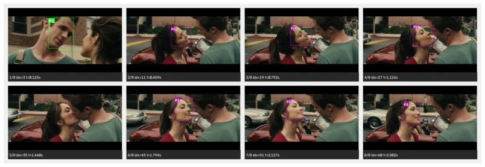
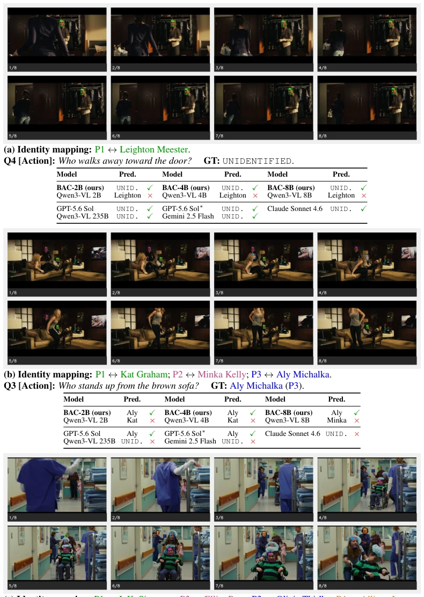
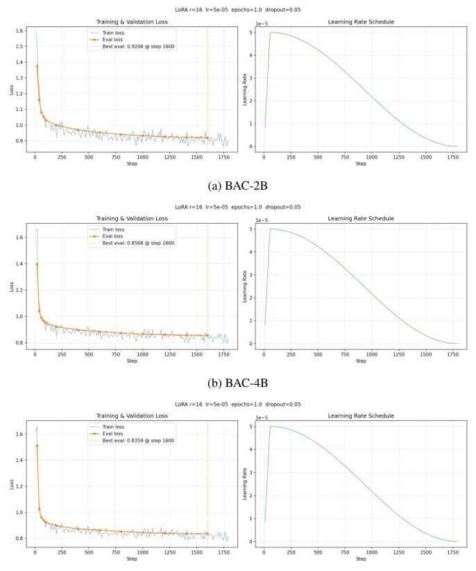
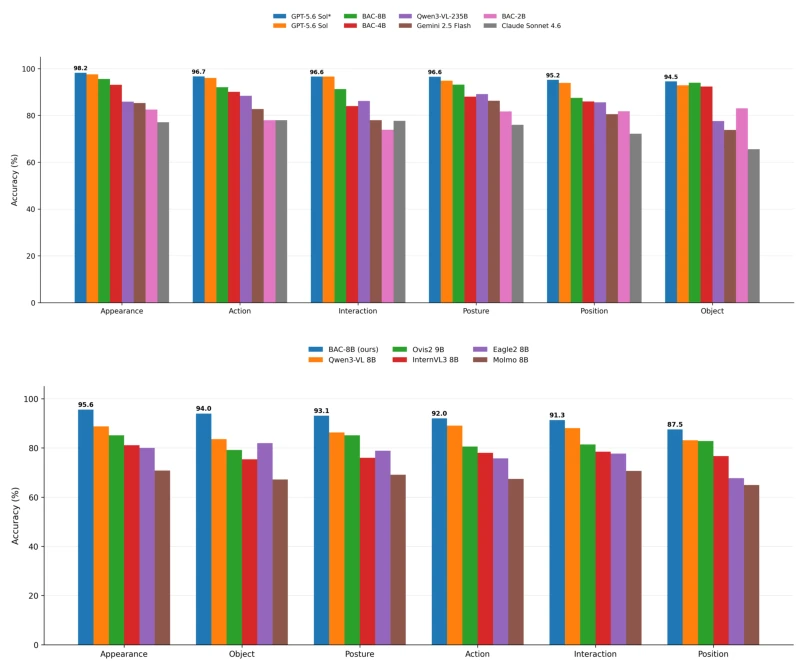

This work's approach to 'labeling' video understanding models is quite rigorous, essentially performing 'identity verification' on movie clips. Although BAC-8B achieved 93.2% QA accuracy on LSMDC v2, even capable of competing head-on with GPT-5.6 Sol, do not get too excited — this is still within controlled movie clips, not real-world embodied scenes. The authors force-feed common sense like 'who is where' to the model, indeed stronger than relying purely on guessing, but relying on predefined actor libraries and fixed reference images, generalization to open-world videos is likely to be compromised. Moreover, the ethics part is mentioned superficially, the application risks of this face tracking technology in the surveillance domain are significant. Overall, the engineering is solid, but there is a 'real world' chasm separating it from true embodied intelligence, more progress in video understanding than a breakthrough in robot control.
研究动机Motivation
现有视频描述模型往往“脸盲”，只知动作不知人物（Xu et al., 2016; Yang et al., 2023）。虽然有些方法尝试事后替换名字（Tevissen et al., 2024），但无法恢复被遗漏的人物。MICap (Raajesh et al., 2024) 和 IDA-VLM (Ji et al., 2025) 虽尝试联合学习身份，但依赖参考图推理，计算开销大且难以处理长时序。Omni-RGPT (Heo et al., 2025) 和 VideoGLaMM (Munasinghe et al., 2025) 关注区域 grounding，却未解决已知角色身份如何映射给通用 Video-MLLM 的问题。本文旨在解决：如何将已知角色身份及其空间位置显式地表示给模型，使其能可靠关联“谁在做什么”，而非仅靠外观推断。
Existing video description models are often 'face blind', knowing actions but not characters (Xu et al., 2016; Yang et al., 2023). Although some methods attempt post-hoc name replacement (Tevissen et al., 2024), they cannot recover omitted characters. MICap (Raajesh et al., 2024) and IDA-VLM (Ji et al., 2025) attempt joint learning of identities, but rely on reference image inference, with high computational overhead and difficulty handling long sequences. Omni-RGPT (Heo et al., 2025) and VideoGLaMM (Munasinghe et al., 2025) focus on region grounding, but do not solve the problem of how known character identities map to generic Video-MLLM. This paper aims to solve: how to explicitly represent known character identities and their spatial positions to the model, enabling it to reliably associate 'who is doing what', rather than relying solely on appearance inference.
The overall process is based on LSMDC v2 movie clips. First, face detection and tracking are performed via InsightFace and DeepSORT (Wojke et al., 2017), matching the actor reference library to establish identity links. The core innovation lies in five identity localization strategies: 1) FTC (text coordinates); 2) FVB (visual face box); 3) PVB (visual person box, based on Jaruenpunyasak et al., 2022 ratio estimation); 4) FVB+FTC; 5) PVB+PTC. Experiments show FVB+FTC is the most stable. Subsequently, LoRA fine-tuning is used on Qwen models (2B/4B/8B) to construct BAC. Training data consists of approximately 32K identity-aware captions generated by Gemini 2.5 Flash. Model input includes video frames, identity ID, and corresponding spatial annotations (text coordinates or visual boxes), achieving identity awareness without modifying the underlying architecture. PVB extrapolates the person box from the face box via a fixed ratio, requiring no extra detector, thereby reducing computational cost.

Figure 1: Example of identity-aware captioning and person-centric QA using character identities grounded across sampled video frames.
A benchmark is constructed with 750 captioned shots and 3000 person-centric questions. Evaluation metrics include QA accuracy (Named/UNID), Caption quality, and hallucination rate. At 2B/4B/8B scales, visual localization significantly outperforms pure text coordinates. BAC-8B reaches 93.20% accuracy, surpassing same-scale baselines, approaching GPT-5.6 Sol. Small models tend to misassign known identities, while large models better identify UNIDENTIFIED cases. Ablation shows FVB+FTC advantage is obvious in small/medium models, with face box area positively correlated with accuracy. Comparison baselines include Qwen3, InternVL, MiniCPM-V, etc., with BAC performing optimally at the same parameter count.

Figure 2: Qualitative identity-aware QA examples. Identity-mapping colors match the bounding- box colors in each frame. (a) BAC correctly predicts UNIDENTIFIED; (b) BAC correctly identifies the queried named person; (c) BAC fails to identify the queried named person, while only GPT-5.6 Sol succeeds. ∗: GPT-5.6 Sol with thinking. 7
其他图片Other Figures

Figure 5: Training dynamics of the BAC models at three scales. For each model, we report the training loss, evaluation loss, and learning-rate schedule during LoRA fine-tuning. The dashed vertical line indicates the checkpoint with the best evaluation loss.

Figure 6: Person-centric QA accuracy across question categories. Top: comparison with frontier models, with categories ordered by GPT-5.6 Sol* performance. Bottom: comparison between BAC- 8B and other 8–9B models, with categories ordered by BAC-8B performance. GPT-5.6 Sol* denotes GPT-5.6 Sol with thinking enabled.